Movie review by : SFAM
Year : 2001
Directed by : Mamoru Oshii
Written by : Kazunori Itô
Degree of Cyberpunk visuals : Very High
Correlation to Cyberpunk themes : Very High
Rating : 9/10
Key cast members :
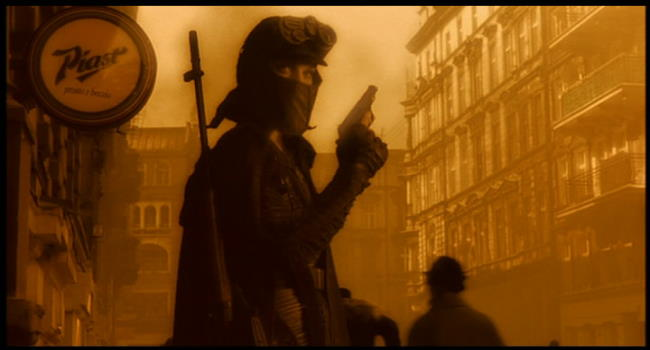
Overview: Mamoru Oshii, the master of philosophical cyberpunk animes ventures into a real world cinema production. The actors, dialogue and sets all take place in a Poland. Although this isn't anime, the characters, cinematography and philosophy bare a striking resemblance to Oshii's latest anime (which might show up on this list soon...). There is also many aspects of the Arthurian legend intermixed here, including the quest for the holy grail (understanding the nature of reality?), the search for the nine sisters of Avalon, and wizards, warriors and bishops. If you're an Oshii fan, this is a must see. If you love VR game films this is a must see. If you like embedded philosophy and symbol laden movies, you will probably enjoy this. But if you're coming purely for the action, there are probably better movies for you to spend your time on.
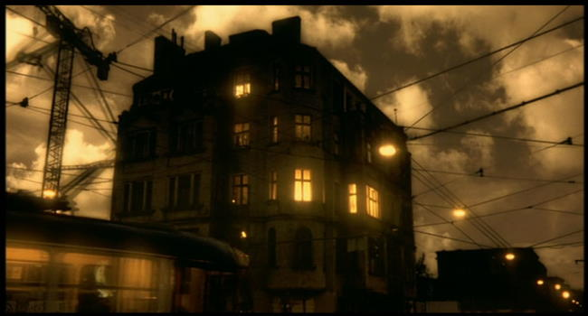
This movie takes place in a cyberpunk, dystopian future where the world is stark, devoid of real life or color, and where the only real enjoyment for young people exists in an illegal virtual reality game called Avalon. Avalon in mythical terms is the island where souls of the departed heroes come to rest. In the Virtual Reality Game of guns, tank and helicopter battles called "Avalon", the players are the heroes, but there is a risk of actually becoming brain-dead while playing this game. In real life, the "unreturned" victims who never leave the game become human vegetables who sit around drooling in an insane asylum (this explains why the game is illegal).
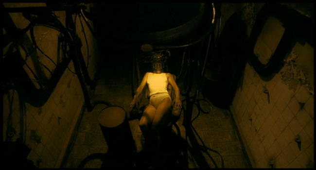
The main character is a hot warrior chick named Ash (wonderfully played by Malgorzata Foremniak). Once, she was a part of the best team in Avalon called Wizard. But something happened which caused one of the team members to panic under fire and call for a "reset" of the program (This is a traumatic action which causes all sorts of bad things to happen). This caused the team to disband and in Ash's case, led her to be disconnected from all other players including Murphy, her team leader. Instead she becomes a supra-warrior who attempts to win the game going solo.
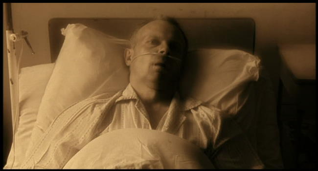
During her adventures, she learns that Murphy also went solo, and eventually worked himself up to finding a secret level called "Special A" that does not have a "reset" function. If you don't complete the level, you don't return. In essence, this level IS Avalon in the mythical sense. In Murphy's case, he did not win, and ended up becoming one of the "unreturned" who lives out his "real" existence drooling in the asylum. Ash becomes obsessed with reaching this secret level so that she might find Murphy and return him. To complete this level, Ash needs to kill an illegal "unreturned" player. If she does wins, she will be offered a game admin job with Avalon. Unfortunately, Class Real is filled with "neutrals." If Ash kills any neutral person she will lose, never to return.
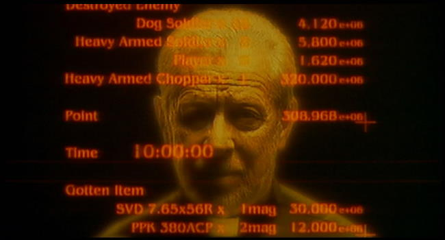
When Ash asks the Game Master if he's real or not, his response is telling: "Does it matter if I'm real or not?" Like GITS:2 there is this notion that the line between what is real and what is imaginary almost doesn't matter. What matters is what is actually occurring inside someone's head: that is the "true" reality.
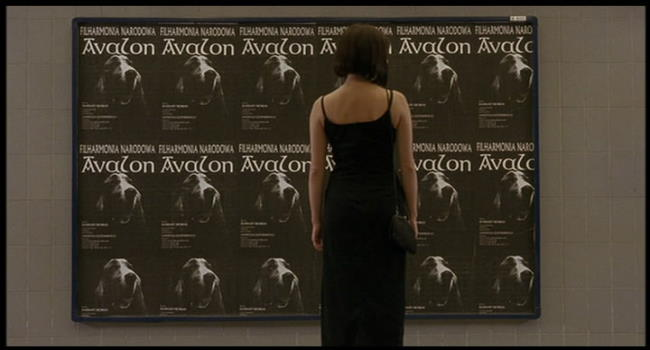
Use of a Dog as a metaphor for the "real" world: Again, similar to when Ash plays with her dog, she is participating in the "here and now." Most of the time, Ash's consciousness is situated in a timeless world where the actual real life moment is secondary to one's perceptual reality. At one point early in the movie Ash wonders aloud, "Real life, is that what this is?" When she starts working at the computer, the dog goes to sleep, indicating that she has left real life and is in the game reality, if not in body, then definitely in spirit.
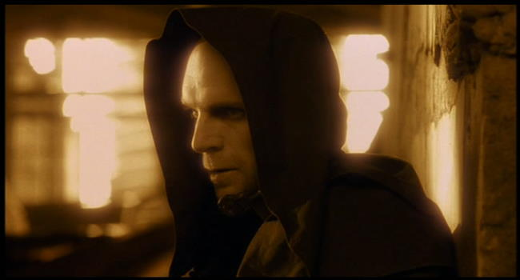
The cinematography: The cinematography in Avalon is strikingly familiar to Oshii's latest anime. The same use of lighting, camera angles, and bright orange/yellow/brown tones are used. Interesting shots involving shadows abound. Throughout, the sets and camera pans are designed to elicit a closed-off, claustrophobic feeling. Everything, from Ash's apartment to the train to the virtual reality headset rooms to the alleyways are bare and boxed in. Slow moving but sweeping pans add to the claustrophobia. Scenes are rarely at regular speed. Instead, the pacing is very slow moving to allow the audience time to take in the essence of the mood. In line with the pacing, Oshii continualy composes set shots similar to how he does in animes. In essence, we see glorious and elongated still shots of visually textured and wonderfully balanced objects.
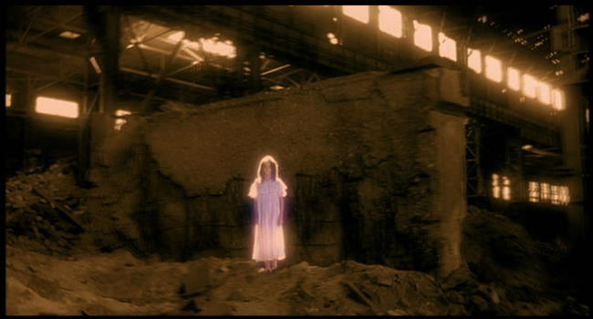
The FX and Sound: The special effects, while not on par with the high-end blockbusters, hold up well when compared to most VR type movies. Most impressive are the digitized explosions. When people and tanks "die" they digitally decompose in interesting ways. Similarly, when you enter the game, buildings auto-form. Also, the score is both haunting and moving. It highlights the slow build-up of thought and emotions. The mood of the film is clearly expressed through the score, which often serves as a catalyst for the pacing changes. As the major plot points change, so does the score radically follow suit. And the ending Avalon opera is just beautiful. I would pay to go see someone sing that.
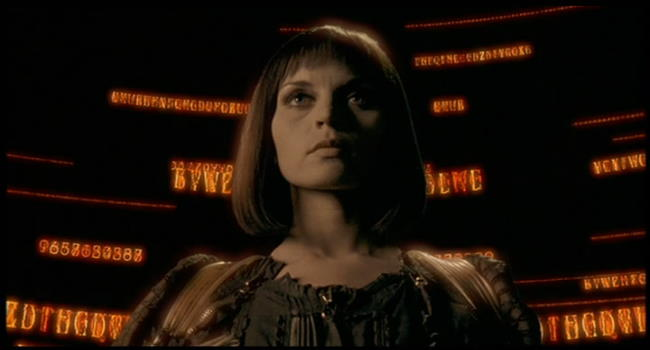
The Bottom Line: In short, Avalon is a wonderfully deep philosophical cyberpunk flick that fully explores whether reality truly matters. In essence, does it really matter if the fantasies we have running in our heads don't really match the "reality" of the outside world? Or more to the point, is anyone really experiencing the reality of the outside world, or are we all just in our own personal Avalon? I hesitate to add more here, as doing so would spoil this most excellent movie for those few unfortunate souls who have yet to experience it. I have just one piece of advice - do so now!
The Ending, Interpretations and Questions Answered
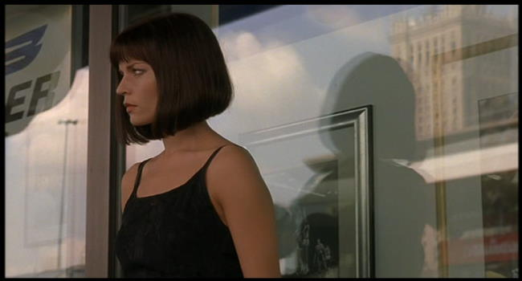
Special A Level (referred to as "Class Real"): To complete this level, Ash needs to kill an illegal "unreturned" player. If she wins, she will be offered a game admin job with Avalon. Unfortunately, Class Real is filled with "neutrals". If Ash kills any neutral person she will lose, and will never to return, while her body would stay in a vegetative state in the psych ward, just like Murphy's. However, Ash quickly finds out that Class Real is essentially our own modern day real life, complete with colors, lots of people who are interacting, laughing and just living life. This is in stark contrast to her "real" world where everything is desolate, bare and lonely. Visionas of Ash's dog permeates class real ? he is traveling in cars, is on the poster of a musical, etc. In essence, the point is hit home that the Class Real level is the REAL here and now.
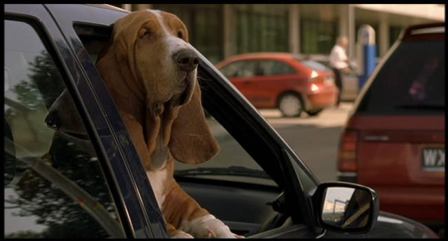
In the climatic scene, Ash eventually finds Murphy, who has decided to stay living in this world. While he might be a vegetable in the "real" world, Murphy has decided that true reality is what we choose to believe. Again, this is another flash-forward to GITS:2, where the underlying message is our bodies our now obsolete ? it's our internally constructed perceptual reality that matters. Ash confronts Murphy about his actions that led to the team break-up, she asks, "For this you abandoned us all? To spend the rest of your life as a hollow shell in a hospital bed staring at nothing?" Murphy replies, "Reality is only what we tell ourselves, that's all". Murphy has convinced himself that Class Real IS reality, and tells Ash to never go back, that "This world, right here is where you belong".
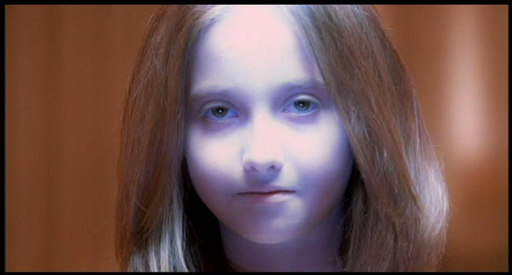
Philosophical Climax: When combined with the Class Real dog motifs and the notion that Class Real IS Avalon (noble warrior's heaven), the final question Oshii poses is given the choice between reality and one's perception, what do we actually choose? Worse yet, do we actually have this choice or is this choice in essence "made for us" by some omniscient game master? I think Oshii's answer is that we actually are all posed with this question on an almost daily basis. Sometimes we are "forced" to deal in reality, but often, whether they realize it or not, people escape to the constructed reality of their perceptions.
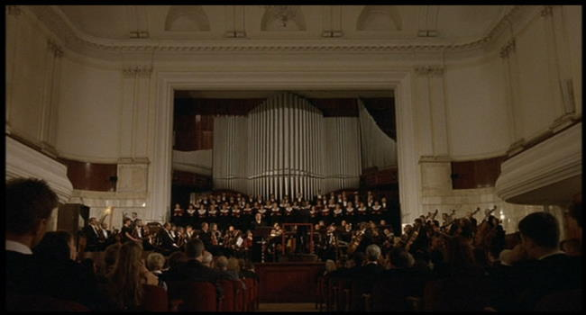
To expound on that - "At the very end, what does Ash choose?" While Avalon still leaves it up to interpretation as to whether Ash kills the girl, completes the mission (and thus, returns to her barren reality) or puts down her gun and stays in Avalon, I think if Oshii is the one making the choice between perception and reality, there is no doubt where he comes down. Both Avalon and its philosophical sequel, Ghost in the Shell 2: Innocence (philosophically, GITS2 is a FAR closer a sequel to Avalon than it is to GITS, whereas just as clearly, the Matrix trilogy is the sequel to GITS) explore the idea that our bodies are becoming more and more obsolete - that as we become more and more connected, "real" existence begins to take a back seat to the power of perceptual reality.
This is different than the whole "map is not the territory" point or a constructivist perspective in the sense that Oshii is clearly linking his thoughts to the ongoing examination of the co-evolution of man and his tools. This is the notion that we as a race really co-evolved with our tools, and are inexorably tied to them (read Dyson's Darwin among the Machines for a good overview of this). As the rate of technology increases, so does our integration with it. Oshii's commentary is mimicking part of the literature in saying that the boundary between our internal and external mental processing has become blurred - that our minds no longer function inside our bodies (Andy Clark's Natural Born Cyborgs has the terrific discussion on this point). Furthermore, Oshii is in effect predicting that this will significantly change our perception of reality and of ourselves as a people (back to the notion that our bodies are becoming obsolete).
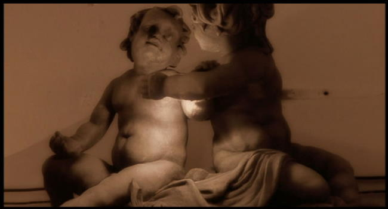
So in "long", Oshii's answer, and most like Ash's would be to clearly choose perceptual reality (Class Real, or the mythical Avalon) over "real" existence. Incidentally, the "proof" of that is found in the symbols. Early on, we see two cupid dolls - one with their head missing and the other grasping toward the broken cupid as if to help it. The story leads us to believe that Ash is the helper Cupid and Murphy, a vegetable in the asylum, is the cupid with the missing head. Yet at the ending, after Murphy is killed, we see the same two cupids, only this time the head is restored. This would not be the case if the goal was to save Murphy. Instead, Oshii is telling us that Ash was the broken cupid, and that by coming to Class Real (the REAL Avalon, as depicted by the Chorus setting in the church), Ash has been saved. The final "proof" that Ash chooses to stay is found in the last frame of the movie, which states simply, "Welcome to Avalon."
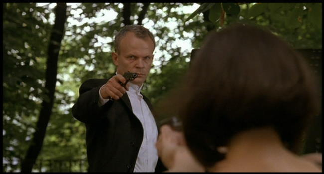
Question: So why does Murphy remove the bullets? Does it make any sense for Murphy to remove the bullets and let her kill him? It doesn't to me, but maybe I missed something in the conversation between the two?
My Answer: Murphy removes the bullets because he already has made up his mind. Murphy's reality IS class "Real" which means Ash's purpose for coming has the complete reverse meaning for him - he will never return, but he still has a chance to "save" Ash. In the same way that Ash felt the need to rescue Murphy, a former team mate and possible lover, Murphy feels the need to rescue Ash from the real world. Murphy has already chosen his reality - he won't return. He also feels responsible for bringing her there (this shows up as his anger). Had he shot her, he would have ensured she never experience "true" reality (Avalon). In the same way that Ash was willing to give up her life to save him, Murphy does the same for her. Welcome to Oshii's version of a cyberpunk love story!